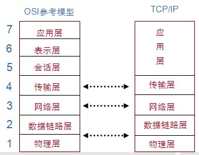
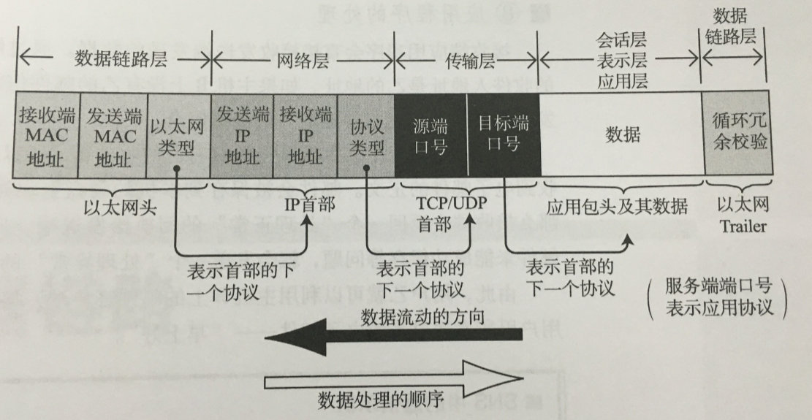
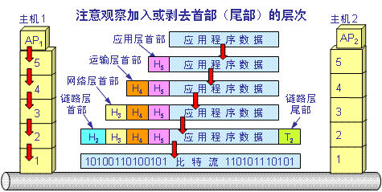
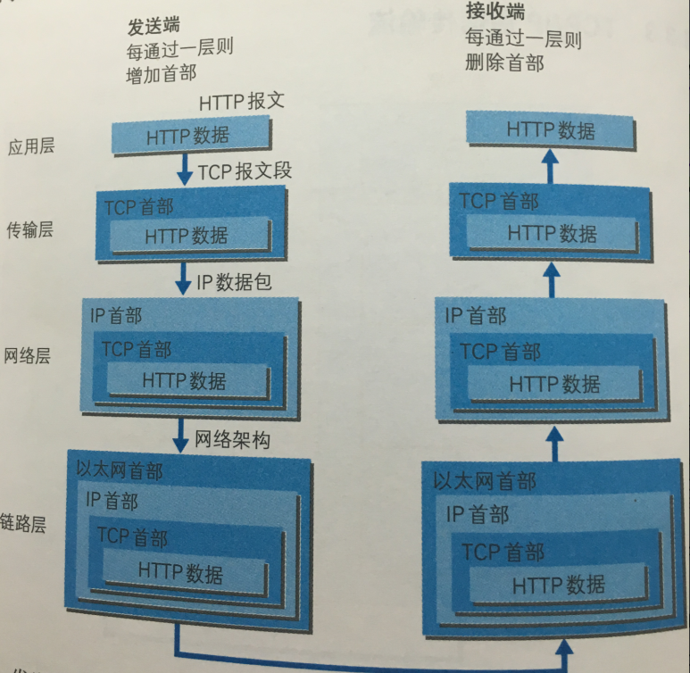
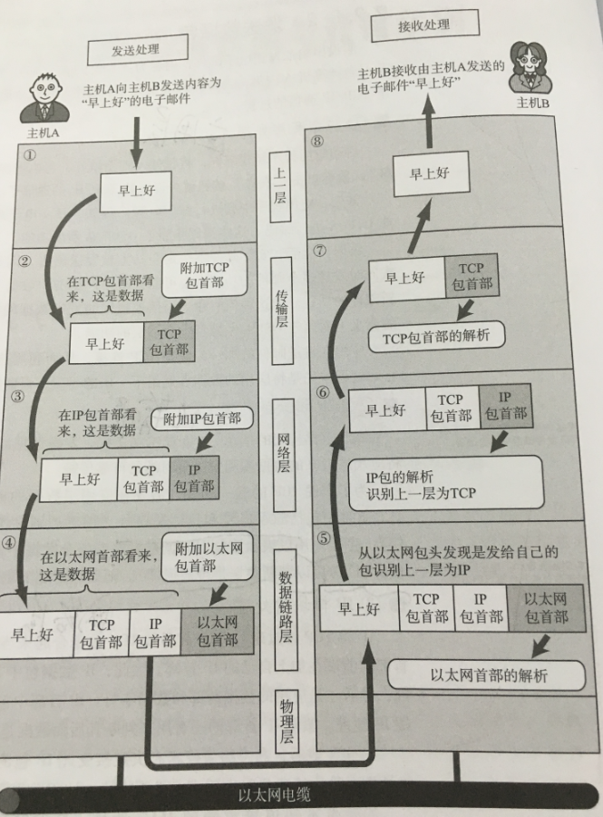

TCP/IP分层模型
一、TCP/IP分层模型
TCP/IP模型分为5层：应用层、传输层、网络层、数据链路层以及 物理层。分层就类似接口的定义，定义了每个层的行为职责。这样的分层抽象提供了更多实现的自由。
下图是osi和tcpip的比较

二、分层结构
1、应用层
应用层是我们经常接触使用的部分，比如常用的http协议、ftp协议（文件传输协议）、snmp（网络管理协议）、
telnet （远程登录协议 ）、smtp（简单邮件传输协议）、dns（域名解析），这次主要是面向用户的交互的。
这里的应用层集成了osi分层模型中 的应用、会话、表示层三层的功能。
2、传输层
传输层的作用就是将应用层的数据进行传输转运。比如我们常说的tcp（可靠的传输控制协议）、udp（用户数据报协议）。传输单位为报文段。
tcp（Transmission Control Protocol）
面向连接（先要和对方确定连接、传输结束需要断开连接，类似打电话）、复杂可靠的、有很好的重传和查错机制。一般用与高速、可靠的通信服务
udp（user datagram protocol）
面向无连接（无需确认对方是否存在，类似寄包裹）、简单高效、没有重传机制。一般用于即时通讯、广播通信等
3、网络层
网络层用来处理网络中流动的数据包，数据包为最小的传递单位，比如我们常用的ip协议、icmp协议、arp协议
（通过分析ip地址得出物理mac地址）。
4、数据链路层
数据链路层一般用来处理连接硬件的部分，包括控制网卡、硬件相关的设备驱动等。传输单位数据帧。
5、物理层
物理层一般为负责数据传输的硬件，比如我们了解的双绞线电缆、无线、光纤等。比特流光电等信号发送接收数据。
三、数据传递
数据传递
首先应用层将数据报文按照协议封装格式压缩然后传递给传输层、传输层通过协议将数据报封装为数据报段、然后传递给网络层，
网络层将数据报段封装为数据包，并传递给数据链路层，数据链路层收到数据包，封装为数据帧，然后又将数据帧转比特流传递给物理层，
物理层将比特流通过光或电信号发送给目标。

详细的数据传递

数据交互
数据交互传递的过程

http报文通过tcp发送的举例

应用交互举例
